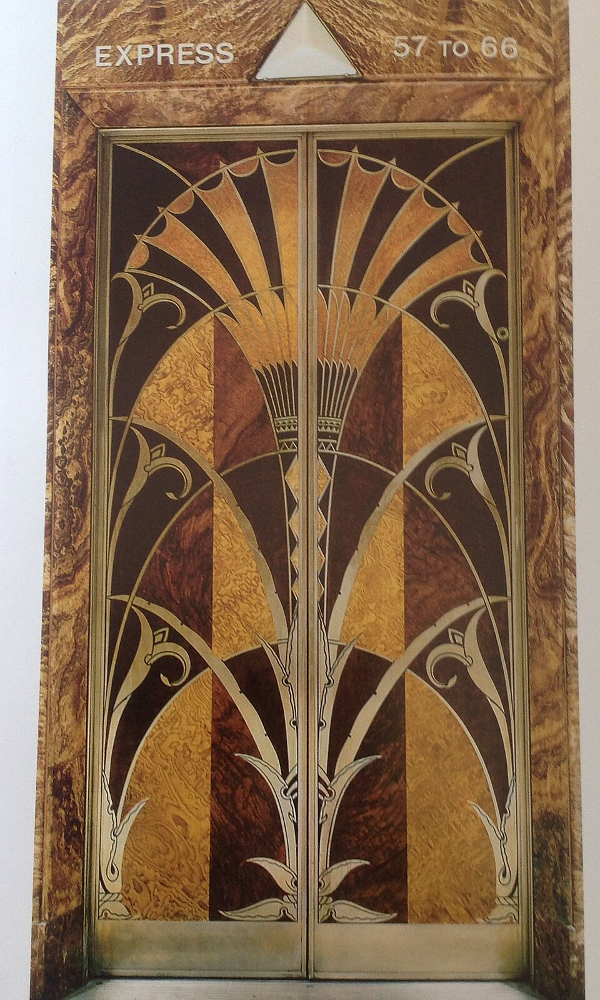
Chrysler Building (1930) — inlaid-wood elevator door Onyx Black #0D0D0F · click to copy
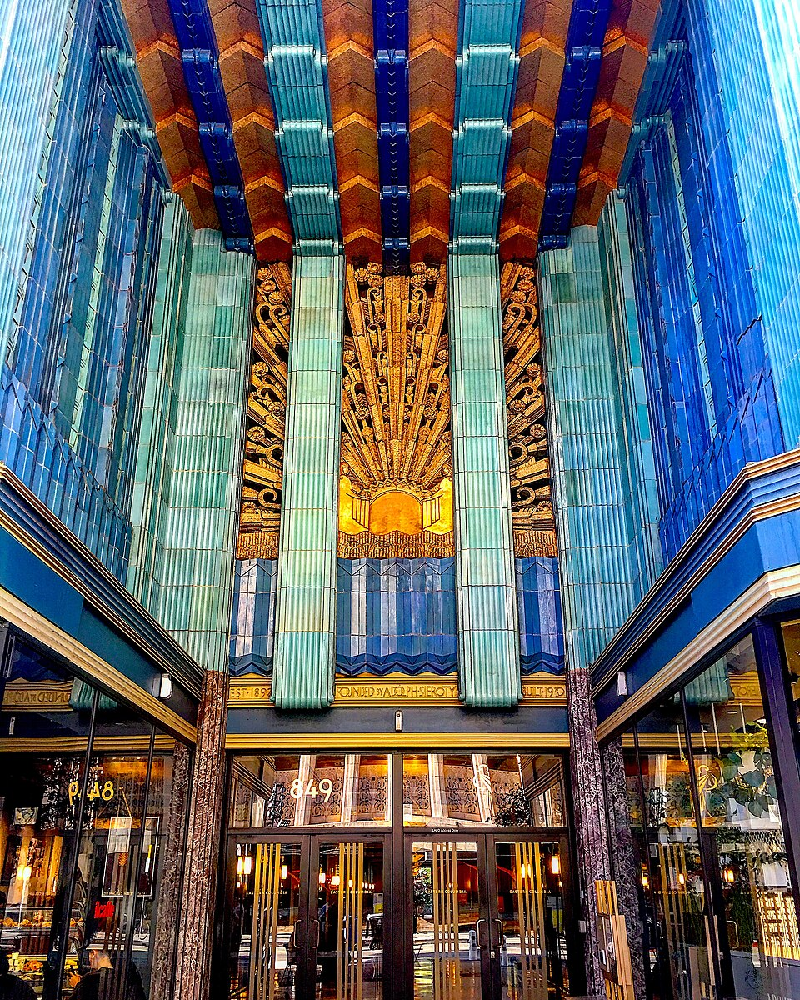
Eastern Columbia Building, Los Angeles (1930) — turquoise and gold terra-cotta Sunburst · gold on black Gilded Gold #C9A24B · click to copy
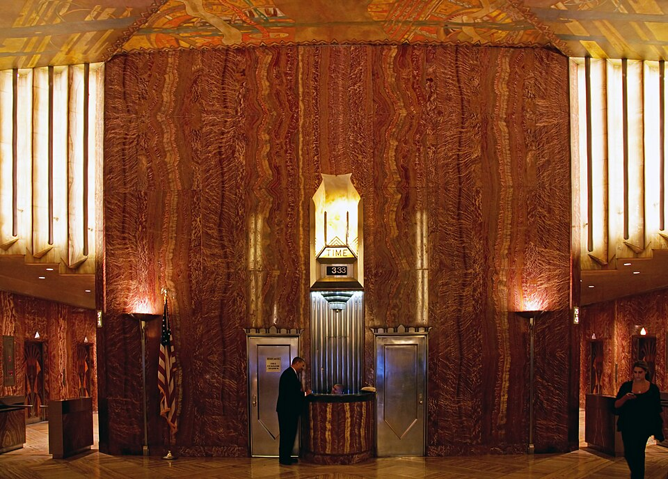
Chrysler Building lobby — red marble and amber glow Aa
Limelight
Display, all-caps friendly · Google Fonts
THE AGE OF SPEED
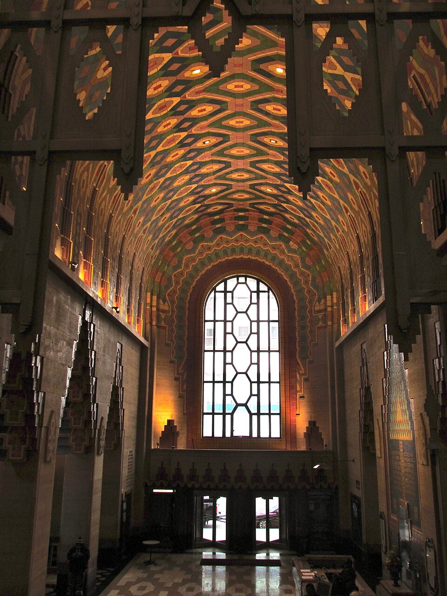
Guardian Building, Detroit (1929) — tiled vaults of the “Cathedral of Finance” Emerald Enamel #0F5D4B · click to copy
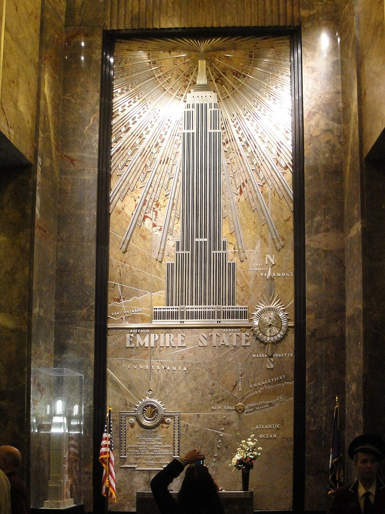
Empire State Building lobby — a relief of the tower in radiating rays Chevron · emerald, gold and chrome Chrome #C3C7CC · click to copy
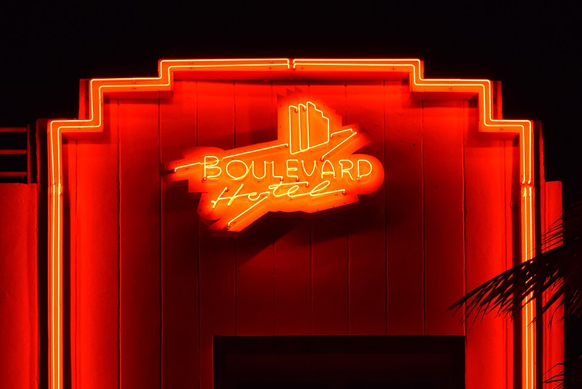
Boulevard Hotel neon, Miami Beach Aa
Poiret One
Thin geometric display, 1920s Paris · Google Fonts
Elegance in every line
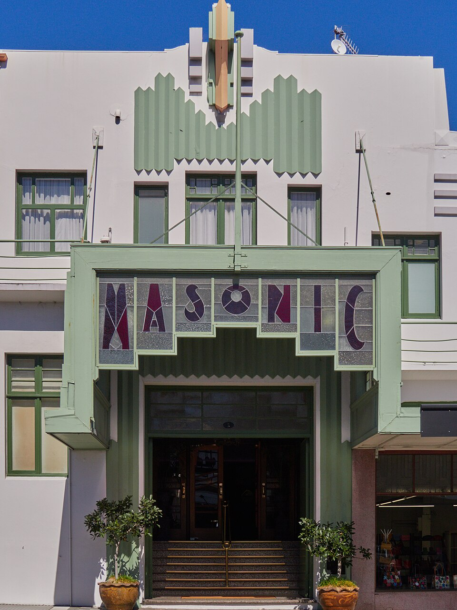
Napier, New Zealand — rebuilt in Deco after the 1931 earthquake Ruby Lacquer #8E1B2E · click to copy
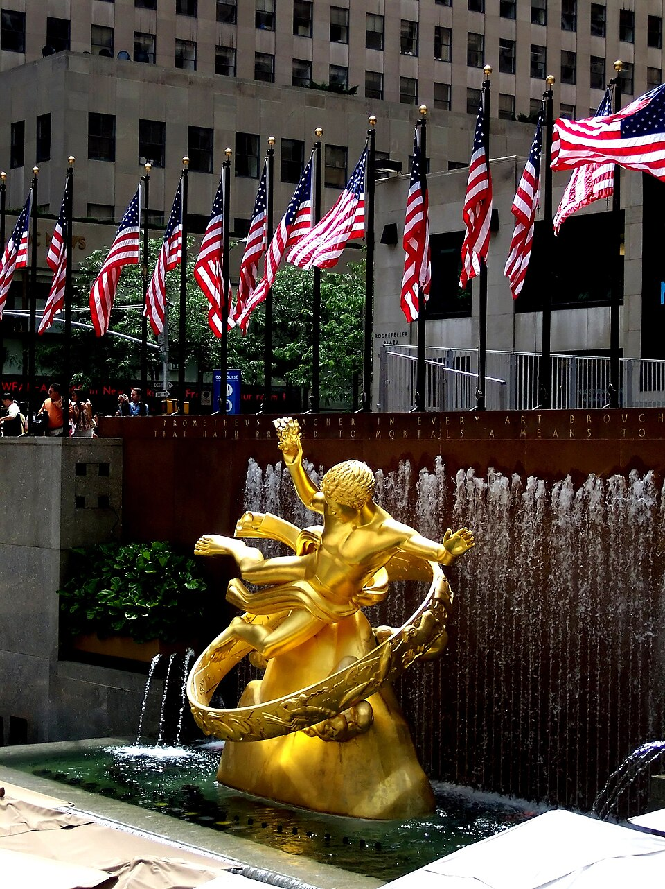
Paul Manship’s gilded Prometheus, Rockefeller Center (1934) Ziggurat · stepped setback 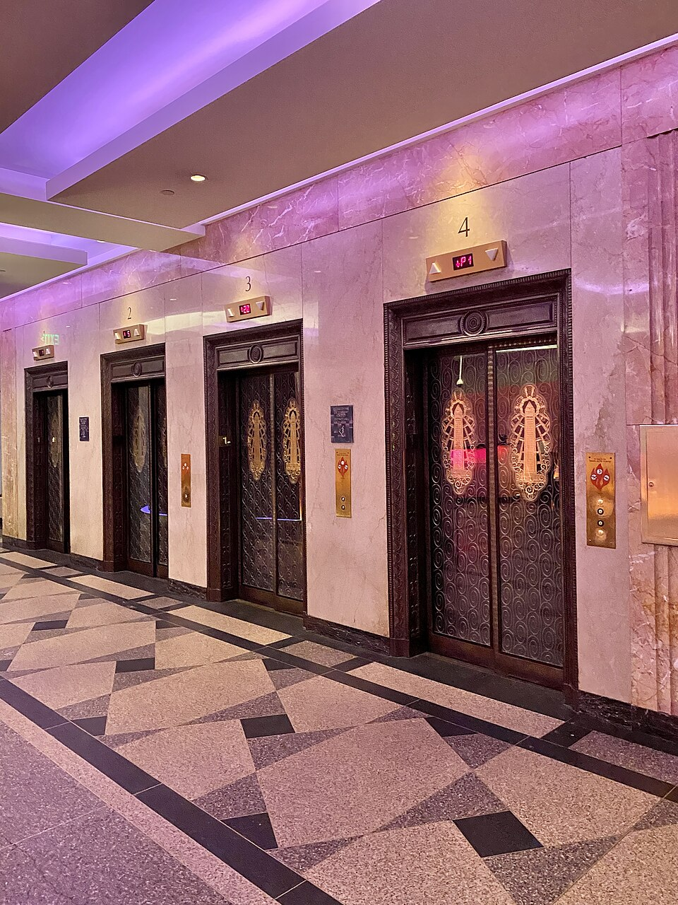
Foshay Tower, Minneapolis (1929) — lobby elevators over geometric terrazzo Midnight Lapis #14284B · click to copy
Born in Paris Name From the 1925 Exposition Internationale des Arts Décoratifs et Industriels Modernes, Paris Icon Chrysler Building, William Van Alen, 1930 — 1,046 ft, briefly the world’s tallest Motifs Sunbursts, chevrons, ziggurats, fans, lightning, speed lines Materials Chrome, lacquer, gold leaf, exotic woods, terra-cotta, glass 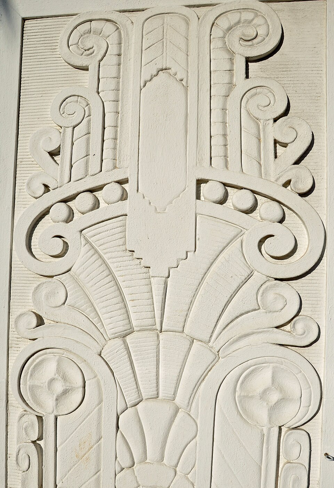
Carved relief panel — stylized fan and scroll forms Ivory #F2EAD8 · click to copy
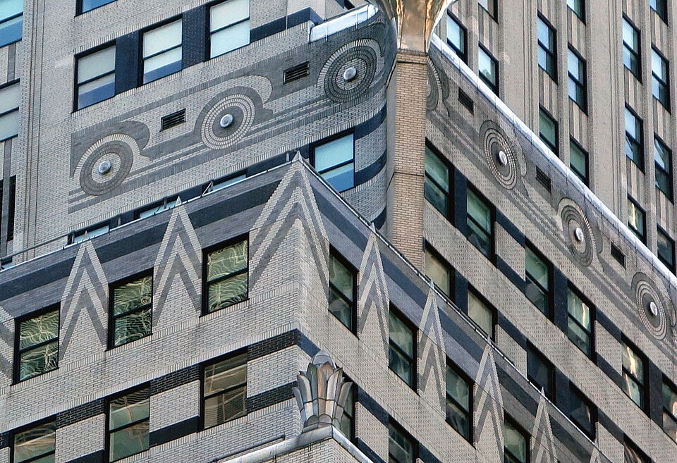
Chrysler Building — stepped façade and ornament Aa
Josefin Sans
Geometric sans, 1920s-inspired · Google Fonts
Streamlined for tomorrow
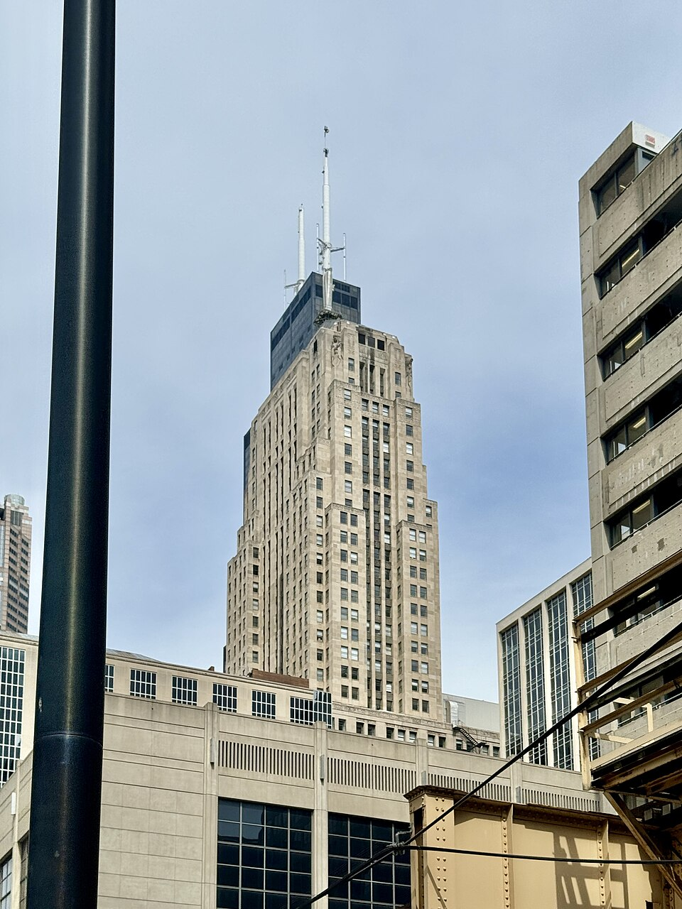
Chicago Board of Trade Building (1930) — crowned by a statue of Ceres Fans · ruby and gold scallops 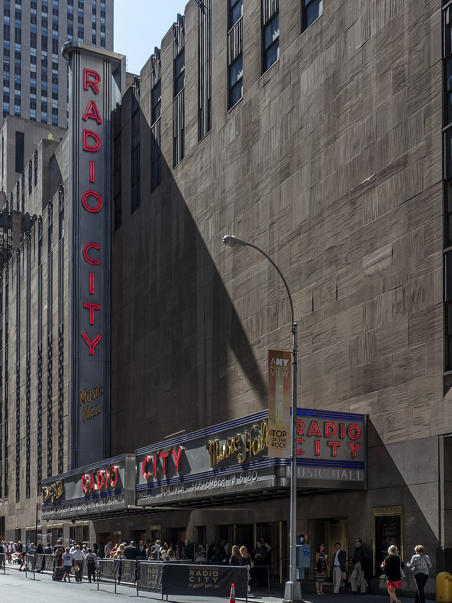
Radio City Music Hall, New York (1932)